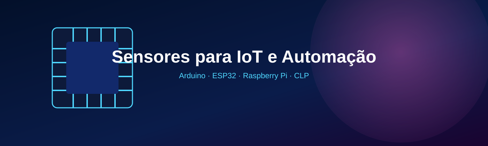
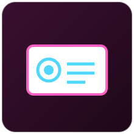

Um catálogo técnico com mais de 20 sensores usados em projetos de Internet das Coisas e automação industrial, com conceito, funcionamento, especificações, tipo de sinal e exemplos de programação em Arduino.
Sensoriamento é o processo de captar grandezas físicas do ambiente ou de um processo - como temperatura, luminosidade, distância, presença, vibração ou corrente elétrica - e transformá-las em sinais elétricos que possam ser lidos, interpretados e processados por um sistema eletrônico. É a "porta de entrada" de qualquer sistema automatizado: sem sensores, um microcontrolador ou CLP não teria como saber o que está acontecendo no mundo real.
Em um processo automatizado, os sensores são responsáveis por fornecer os dados que alimentam a tomada de decisão do sistema de controle. Sem eles, um CLP ou microcontrolador estaria "cego", incapaz de reagir a mudanças reais no processo. Sensores bem escolhidos e calibrados aumentam a qualidade do produto final, reduzem desperdício de matéria-prima e energia, previnem acidentes (por exemplo, detectando vazamento de gás ou presença de pessoas em áreas de risco) e permitem que a manutenção seja feita de forma preditiva, antes que uma falha pare a produção.
O ciclo básico de qualquer sistema automatizado segue três etapas: sensoriamento (o sensor mede uma grandeza física), comunicação de dados (o valor lido é transmitido - por um barramento local como I2C/SPI, por uma rede industrial como Profinet/Modbus, ou pela internet via MQTT/HTTP) e controle (um microcontrolador, CLP ou sistema em nuvem decide uma ação com base no dado recebido, como ligar um motor, abrir uma válvula ou emitir um alerta). Na Internet das Coisas, esse ciclo se repete continuamente e em rede, permitindo que decisões sejam tomadas remotamente e que o histórico de dados seja usado para análises futuras.
O Arduino é uma plataforma de prototipagem eletrônica de código aberto, composta por uma placa com um microcontrolador (como o ATmega328P na placa Arduino Uno) e por um ambiente de desenvolvimento (IDE) que usa uma linguagem baseada em C/C++ simplificada. Ele permite ler sinais de sensores em suas entradas digitais e analógicas, processar essas informações em um programa (chamado "sketch") e controlar atuadores - como relés, motores e LEDs - em suas saídas, sendo a porta de entrada mais comum para projetos de eletrônica embarcada e IoT. Placas como o ESP32 seguem a mesma lógica de programação do Arduino, mas já trazem Wi-Fi e Bluetooth integrados, o que facilita a conexão dos sensores à internet.
Um programa Arduino é estruturado em duas funções principais: setup(),
executada uma única vez quando a placa liga (usada para configurar pinos e
comunicação serial), e loop(), que roda repetidamente enquanto a placa
estiver ligada (usada para ler sensores e tomar decisões continuamente).
Quer ver o Arduino em ação em projetos completos, com circuito, código e vídeo de demonstração? Confira os Desafios de Sensoriamento no Tinkercad.
Abaixo estão exemplos simplificados de leitura, em Arduino, de dez sensores diferentes apresentados neste catálogo. Cada exemplo traz comentários explicando a rotina principal.
// Requer a biblioteca "DHT sensor library" (Adafruit) #include <DHT.h> #define PINO_DHT 2 DHT dht(PINO_DHT, DHT11); void setup() { Serial.begin(9600); dht.begin(); // inicializa o sensor } void loop() { float umidade = dht.readHumidity(); float temperatura = dht.readTemperature(); Serial.print("Temperatura: "); Serial.print(temperatura); Serial.print(" C | Umidade: "); Serial.print(umidade); Serial.println(" %"); delay(2000); // aguarda antes da próxima leitura }
#define PINO_LM35 A0 void setup() { Serial.begin(9600); } void loop() { int leituraADC = analogRead(PINO_LM35); // converte a leitura de 0-1023 para tensão e depois para graus Celsius float tensao = (leituraADC * 5.0) / 1023.0; float temperaturaC = tensao * 100.0; Serial.print("Temperatura: "); Serial.print(temperaturaC); Serial.println(" C"); delay(1000); }
#define PINO_TRIGGER 9 #define PINO_ECHO 10 void setup() { Serial.begin(9600); pinMode(PINO_TRIGGER, OUTPUT); pinMode(PINO_ECHO, INPUT); } void loop() { // envia o pulso ultrassônico de 10 microssegundos digitalWrite(PINO_TRIGGER, LOW); delayMicroseconds(2); digitalWrite(PINO_TRIGGER, HIGH); delayMicroseconds(10); digitalWrite(PINO_TRIGGER, LOW); long duracao = pulseIn(PINO_ECHO, HIGH); float distanciaCm = duracao * 0.034 / 2; // converte tempo em distância Serial.print("Distância: "); Serial.print(distanciaCm); Serial.println(" cm"); delay(500); }
#define PINO_LDR A1 #define PINO_RELE_LUZ 7 void setup() { Serial.begin(9600); pinMode(PINO_RELE_LUZ, OUTPUT); } void loop() { int luminosidade = analogRead(PINO_LDR); Serial.println(luminosidade); // liga a iluminação automaticamente quando escurece if (luminosidade < 300) { digitalWrite(PINO_RELE_LUZ, HIGH); } else { digitalWrite(PINO_RELE_LUZ, LOW); } delay(500); }
#define PINO_PIR 3 void setup() { Serial.begin(9600); pinMode(PINO_PIR, INPUT); } void loop() { int movimento = digitalRead(PINO_PIR); if (movimento == HIGH) { Serial.println("Movimento detectado!"); } delay(200); }
#define PINO_MQ2 A2 const float LIMITE_ALARME = 400; void setup() { Serial.begin(9600); } void loop() { int nivelGas = analogRead(PINO_MQ2); Serial.print("Nível de gás: "); Serial.println(nivelGas); // dispara alarme se ultrapassar o limite de segurança if (nivelGas > LIMITE_ALARME) { Serial.println("ALERTA: possível vazamento de gás!"); } delay(1000); }
#define PINO_ACS712 A3 const float SENSIBILIDADE = 0.185; // V/A do modelo de 5A void setup() { Serial.begin(9600); } void loop() { int leitura = analogRead(PINO_ACS712); float tensao = (leitura * 5.0) / 1023.0; // 2.5V representa corrente zero no ACS712 (offset do sensor) float corrente = (tensao - 2.5) / SENSIBILIDADE; Serial.print("Corrente: "); Serial.print(corrente); Serial.println(" A"); delay(500); }
#define PINO_VIBRACAO 4 void setup() { Serial.begin(9600); pinMode(PINO_VIBRACAO, INPUT); } void loop() { int vibrou = digitalRead(PINO_VIBRACAO); if (vibrou == HIGH) { Serial.println("Vibração detectada - verificar equipamento!"); } delay(100); }
#define PINO_HALL 2 volatile int contadorPulsos = 0; void contarPulso() { contadorPulsos++; // executado a cada volta do eixo (interrupção) } void setup() { Serial.begin(9600); pinMode(PINO_HALL, INPUT); attachInterrupt(digitalPinToInterrupt(PINO_HALL), contarPulso, FALLING); } void loop() { delay(1000); // janela de 1 segundo para calcular RPM int rpm = contadorPulsos * 60; Serial.print("Rotação: "); Serial.print(rpm); Serial.println(" RPM"); contadorPulsos = 0; }
// Requer a biblioteca "MFRC522" (miguelbalboa) #include <SPI.h> #include <MFRC522.h> #define PINO_SS 10 #define PINO_RST 9 MFRC522 leitor(PINO_SS, PINO_RST); void setup() { Serial.begin(9600); SPI.begin(); leitor.PCD_Init(); } void loop() { // verifica se um novo cartão foi aproximado do leitor if (leitor.PICC_IsNewCardPresent() && leitor.PICC_ReadCardSerial()) { Serial.print("Cartão detectado, UID: "); for (byte i = 0; i < leitor.uid.size; i++) { Serial.print(leitor.uid.uidByte[i], HEX); } Serial.println(); leitor.PICC_HaltA(); } }
Recurso interativo para visualizar, na prática, como um microcontrolador recebe leituras de diferentes sensores ao longo do tempo. Escolha um sensor e clique em "Simular leitura" para gerar uma amostra (valores meramente ilustrativos, gerados no navegador).
Além do catálogo teórico de sensores, este site também reúne desafios práticos completos — circuito, código e vídeo de demonstração — montados e simulados no Tinkercad Circuits.

Iluminação Inteligente, Estacionamento Inteligente e Ambiente Inteligente, com circuito, código C++ e vídeo de cada desafio.
Mais de 20 sensores organizados em 5 grupos temáticos.
DHT11, DHT22, LM35 e DS18B20 — medição térmica e de umidade do ar.

LDR, BH1750, HC-SR04, PIR HC-SR501, LJ12A3 e LJ18A3.

MQ-2, MQ-135, umidade do solo, FC-37, boia de nível e YF-S201.

ACS712, ZMPT101B, SW-420, Hall A3144 e Encoder KY-040.

RFID MFRC522, célula de carga + HX711, KY-037 e sensor de chama IR.